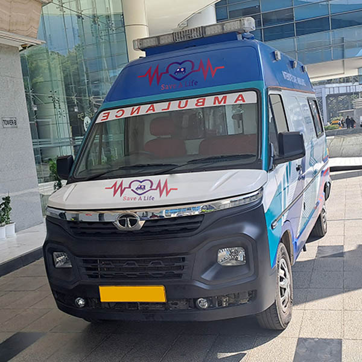

Save A Life is a healthcare and transportation company founded in 2020. Our primary goal is to provide trusted and better healthcare services to people in need. We operate a fleet of ambulances and partner with several healthcare companies to offer a wide range of medical services.
1. Ambulance Services: We provide 24/7 ambulance transportation equipped with modern medical facilities and trained professionals.
2. Medical Services: We collaborate with healthcare organizations to provide diagnostic tests, doctor consultations, and home healthcare services.
Our Vision is to be the leading patient transport and ambulance service provider, recognized for setting the highest standards of safety, reliability, compassion, and customer care. We strive to ensure that every patient receives timely, comfortable, and professional transportation while giving families and healthcare providers complete peace of mind. Through innovation, dedicated medical support, and a commitment to excellence, we aim to make quality emergency and non-emergency transport accessible to everyone, anytime and anywhere.